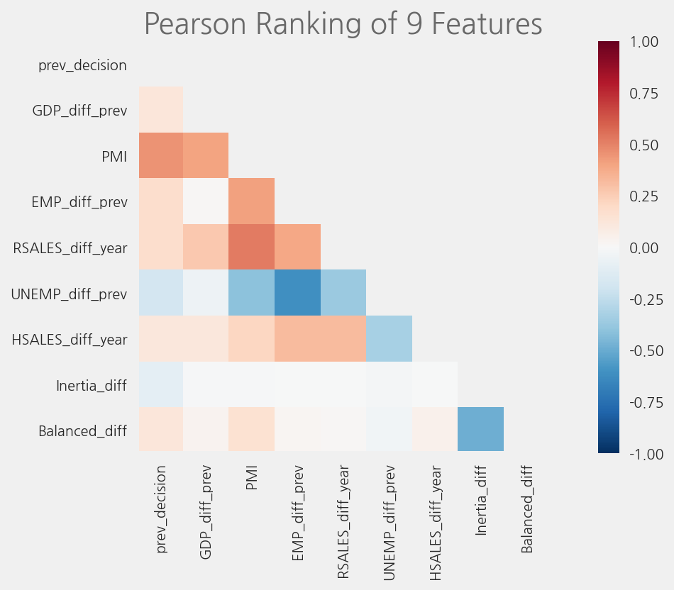
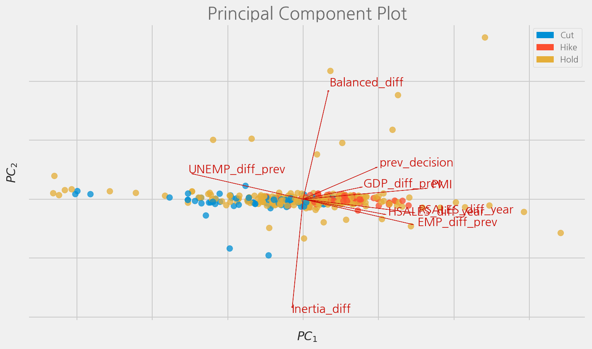
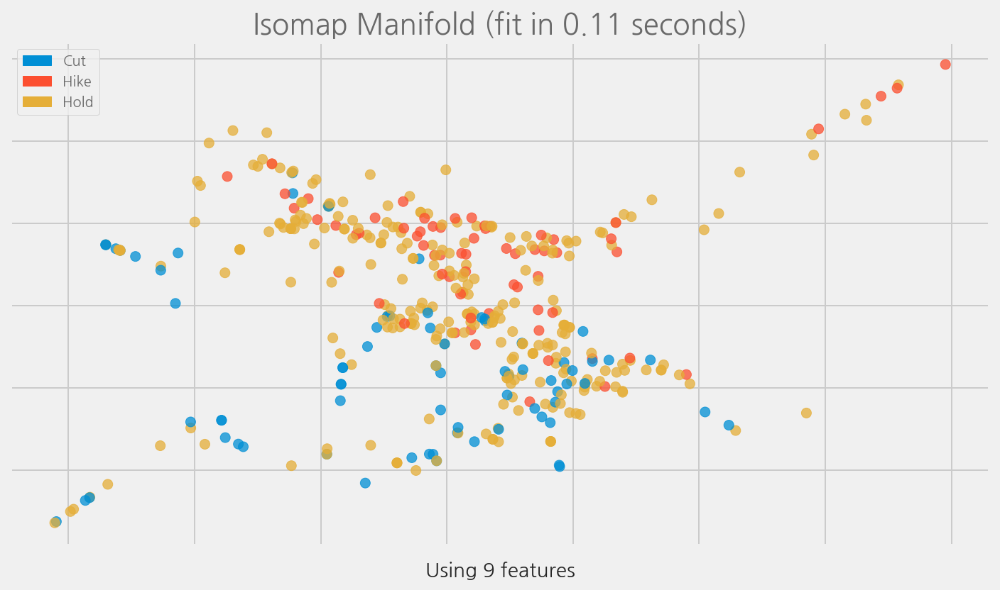

Visualizing Features
Contents
Visualizing Features#
%config InlineBackend.figure_format='retina'
import logging
from ekorpkit import eKonf
logging.basicConfig(level=logging.INFO)
print(eKonf.__version__)
0.1.32+22.g1490fd9.dirty
data_dir = "../data/fomc"
Build and load a feature set#
cfg = eKonf.compose("dataset=feature_build")
cfg.name = "fomc_features_small"
cfg.data_dir = data_dir
cfg.data_file = "econ_train_small.parquet"
cfg.force.build = True
cfg.pipeline.split_sampling.stratify_on = "target"
cfg.pipeline.split_sampling.random_state = 123
cfg.pipeline.split_sampling.test_size = 0.25
cfg.pipeline.reset_index.index_column_name = "date"
cfg.column_info.columns.index = "index"
cfg.column_info.columns.id = "date"
cfg.column_info.columns.x = [
"prev_decision",
"GDP_diff_prev",
"PMI",
"EMP_diff_prev",
"RSALES_diff_year",
"UNEMP_diff_prev",
"HSALES_diff_year",
"Inertia_diff",
"Balanced_diff",
]
cfg.column_info.columns.y = "target"
f_small = eKonf.instantiate(cfg)
f_small.persist()
INFO:ekorpkit.pipelines.pipe:Applying pipeline: OrderedDict([('load_dataframe', 'load_dataframe'), ('reset_index', 'reset_index'), ('split_sampling', 'split_sampling')])
INFO:ekorpkit.ekonf:Applying pipe: functools.partial(<function load_dataframe at 0x7fd4706e8310>)
INFO:ekorpkit.io.file:Processing [1] files from ['econ_train_small.parquet']
INFO:ekorpkit.io.file:Loading 1 dataframes from ['../data/fomc/econ_train_small.parquet']
INFO:ekorpkit.io.file:Loading data from ../data/fomc/econ_train_small.parquet
INFO:ekorpkit.ekonf:Applying pipe: functools.partial(<function reset_index at 0x7fd4706e7670>)
INFO:ekorpkit.ekonf:Applying pipe: functools.partial(<function split_sampling at 0x7fd4706e7280>)
INFO:ekorpkit.io.file:Saving dataframe to ../data/fomc/fomc_features_small/fomc_features_small-train.parquet
INFO:ekorpkit.io.file:Saving dataframe to ../data/fomc/fomc_features_small/fomc_features_small-test.parquet
INFO:ekorpkit.datasets.feature:Dataset fomc_features_small built with 415 rows
INFO:ekorpkit.io.file:Processing [1] files from ['fomc_features_small-train.parquet']
INFO:ekorpkit.io.file:Loading 1 dataframes from ['../data/fomc/fomc_features_small/fomc_features_small-train.parquet']
INFO:ekorpkit.io.file:Loading data from ../data/fomc/fomc_features_small/fomc_features_small-train.parquet
INFO:ekorpkit.info.column:index: index, index of data: None, columns: ['date', 'target', 'prev_decision', 'GDP_diff_prev', 'PMI', 'EMP_diff_prev', 'RSALES_diff_year', 'UNEMP_diff_prev', 'HSALES_diff_year', 'Inertia_diff', 'Balanced_diff'], id: ['date']
INFO:ekorpkit.info.column:Adding id [split] to ['date']
INFO:ekorpkit.info.column:Added id [split], now ['date', 'split']
INFO:ekorpkit.info.column:Added a column [split] with value [train]
WARNING:ekorpkit.datasets.base:File fomc_features_small-dev.parquet not found.
INFO:ekorpkit.io.file:Processing [1] files from ['fomc_features_small-test.parquet']
INFO:ekorpkit.io.file:Loading 1 dataframes from ['../data/fomc/fomc_features_small/fomc_features_small-test.parquet']
INFO:ekorpkit.io.file:Loading data from ../data/fomc/fomc_features_small/fomc_features_small-test.parquet
INFO:ekorpkit.info.column:Added a column [split] with value [test]
INFO:ekorpkit.info.stat: >> elapsed time to calculate statistics: 0:00:00.004594
INFO:ekorpkit.info.stat: >> elapsed time to calculate statistics: 0:00:00.003903
INFO:ekorpkit.io.file:Saving dataframe to ../data/fomc/fomc_features_small/fomc_features_small-train.parquet
INFO:ekorpkit.io.file:Saving dataframe to ../data/fomc/fomc_features_small/fomc_features_small-test.parquet
f_small.train_data
| date | target | prev_decision | GDP_diff_prev | PMI | EMP_diff_prev | RSALES_diff_year | UNEMP_diff_prev | HSALES_diff_year | Inertia_diff | Balanced_diff | split | |
|---|---|---|---|---|---|---|---|---|---|---|---|---|
| index | ||||||||||||
| 0 | 2002-09-24 | Hold | 0.0 | 0.615502 | 50.3 | -0.002297 | 2.206995 | -1.724138 | 17.090069 | 0.0 | 0.0 | train |
| 1 | 1997-03-25 | Hike | 0.0 | 1.038398 | 53.1 | 0.257080 | 3.197859 | -1.886792 | 4.161248 | 0.0 | 0.0 | train |
| 2 | 2011-04-27 | Hold | 0.0 | 0.519595 | 59.1 | 0.179317 | 4.107119 | 0.000000 | -21.259843 | 0.0 | 0.0 | train |
| 3 | 1989-02-08 | Hike | 1.0 | 1.332501 | 54.7 | 0.246029 | 2.094256 | 1.886792 | 22.905983 | 0.0 | 0.0 | train |
| 4 | 2008-09-16 | Hold | 0.0 | 0.572295 | 49.2 | -0.202195 | -4.803606 | 5.172414 | -37.768240 | 0.0 | 0.0 | train |
| ... | ... | ... | ... | ... | ... | ... | ... | ... | ... | ... | ... | ... |
| 306 | 1998-08-18 | Hold | 0.0 | 0.925821 | 49.2 | 0.102319 | 2.026188 | 0.000000 | 8.819876 | 0.0 | 0.0 | train |
| 307 | 2021-04-28 | Hold | 0.0 | 1.115277 | 63.7 | 0.489818 | 26.945039 | -3.225806 | 44.426230 | 0.0 | 0.0 | train |
| 308 | 2004-01-28 | Hold | 0.0 | 1.666896 | 60.1 | 0.087374 | 2.493088 | -1.724138 | 7.729008 | 0.0 | 0.0 | train |
| 309 | 2015-06-17 | Hold | 0.0 | 0.813314 | 52.8 | 0.234429 | 2.662704 | 3.703704 | 11.308204 | 0.0 | 0.0 | train |
| 310 | 2007-08-16 | Hold | 0.0 | 0.638435 | 52.4 | -0.022453 | 0.622821 | 2.173913 | -19.378238 | 0.0 | 0.0 | train |
311 rows × 12 columns
cfg = eKonf.compose(config_group="dataset=feature")
cfg.name = "fomc_features_small"
cfg.data_dir = data_dir
f_small = eKonf.instantiate(cfg)
f_small.INFO
{'splits': {'train': {'data_file': 'fomc_features_small-train.parquet',
'name': 'train',
'num_examples': 311,
'num_bytes': 63207,
'human_bytes': '61.73 KiB'},
'test': {'data_file': 'fomc_features_small-test.parquet',
'name': 'test',
'num_examples': 104,
'num_bytes': 21118,
'human_bytes': '20.62 KiB'}},
'num_examples': 415,
'size_in_bytes': 84325,
'size_in_human_bytes': '82.35 KiB',
'data_files': {'train': 'fomc_features_small-train.parquet',
'test': 'fomc_features_small-test.parquet'},
'meta_files': {},
'data_files_modified': '2022-06-14 10:23:24',
'info_updated': '2022-06-14 10:23:24',
'column_info': {'_keys_': {'index': 'index',
'id': 'id',
'x': 'x',
'y': 'y',
'split': 'split',
'dataset': 'dataset'},
'columns': {'index': 'date',
'id': ['date', 'split'],
'x': ['prev_decision',
'GDP_diff_prev',
'PMI',
'EMP_diff_prev',
'RSALES_diff_year',
'UNEMP_diff_prev',
'HSALES_diff_year',
'Inertia_diff',
'Balanced_diff'],
'y': 'target'},
'datetime': {'columns': None,
'format': None,
'rcParams': None,
'_parms_': None},
'data': {'date': 'datetime64[ns]',
'target': 'object',
'prev_decision': 'float64',
'GDP_diff_prev': 'float64',
'PMI': 'float64',
'EMP_diff_prev': 'float64',
'RSALES_diff_year': 'float64',
'UNEMP_diff_prev': 'float64',
'HSALES_diff_year': 'float64',
'Inertia_diff': 'float64',
'Balanced_diff': 'float64',
'split': 'str'},
'keys': {'index': 'date', 'id': 'id', 'x': 'x', 'y': 'y', 'split': 'split'}}}
y_train = f_small.y_train
print(f_small.COLUMN.Y)
y_train[:5]
target
date
0 Hold
1 Hold
2 Hold
3 Cut
4 Cut
Name: target, dtype: object
X_train = f_small.X_train
print(f_small.COLUMN.X)
X_train[:5]
['prev_decision', 'GDP_diff_prev', 'PMI', 'EMP_diff_prev', 'RSALES_diff_year', 'UNEMP_diff_prev', 'HSALES_diff_year', 'Inertia_diff', 'Balanced_diff']
| prev_decision | GDP_diff_prev | PMI | EMP_diff_prev | RSALES_diff_year | UNEMP_diff_prev | HSALES_diff_year | Inertia_diff | Balanced_diff | |
|---|---|---|---|---|---|---|---|---|---|
| date | |||||||||
| 0 | 0.0 | 7.547535 | 57.7 | 0.234047 | 3.055276 | -2.898551 | 22.622478 | 0.0 | 0.0 |
| 1 | 0.0 | 0.843712 | 51.9 | 0.058919 | 0.196754 | -2.173913 | -21.960415 | 0.0 | 0.0 |
| 2 | 1.0 | 0.364447 | 54.7 | 0.221891 | 4.213922 | -5.000000 | -8.387800 | 0.0 | 0.0 |
| 3 | -1.0 | 0.743327 | 51.2 | 0.124735 | 2.094256 | -4.285714 | 13.643411 | 0.0 | 0.0 |
| 4 | 0.0 | 1.284129 | 56.1 | 0.221892 | 3.239959 | -3.278689 | 16.625310 | 0.0 | 0.0 |
cfg = eKonf.compose("dataset=feature_build")
cfg.name = "fomc_features_large"
cfg.data_dir = data_dir
cfg.data_file = "econ_train_large.parquet"
cfg.force.rebuild = True
cfg.pipeline.split_sampling.stratify_on = "target"
cfg.pipeline.split_sampling.random_state = 123
cfg.pipeline.split_sampling.test_size = 0.25
cfg.pipeline.reset_index.index_column_name = "date"
cfg.column_info.columns.index = "date"
cfg.column_info.columns.id = "index"
cfg.column_info.columns.x = [
"prev_decision",
"GDP_diff_prev",
"GDP_diff_year",
"GDPPOT_diff_prev",
"GDPPOT_diff_year",
"PCE_diff_prev",
"PCE_diff_year",
"CPI_diff_prev",
"CPI_diff_year",
"UNEMP",
"UNEMP_diff_prev",
"UNEMP_diff_year",
"EMP",
"EMP_diff_prev",
"EMP_diff_year",
"PMI",
"PMI_diff_prev",
"PMI_diff_year",
"RSALES_diff_prev",
"RSALES_diff_year",
"HSALES_diff_prev",
"HSALES_diff_year",
"Taylor-Rate",
"Balanced-Rate",
"Inertia-Rate",
"Taylor_diff",
"Balanced_diff",
"Inertia_diff",
]
cfg.column_info.columns.y = "target"
cfg.verbose = False
f_large = eKonf.instantiate(cfg)
f_large.persist()
Visualize Features#
cfg = eKonf.compose(config_group="dataset=feature")
cfg.name = "fomc_features_small"
cfg.data_dir = data_dir
f_small = eKonf.instantiate(cfg)
f_small.train_data.head()
| date | target | prev_decision | GDP_diff_prev | PMI | EMP_diff_prev | RSALES_diff_year | UNEMP_diff_prev | HSALES_diff_year | Inertia_diff | Balanced_diff | split | |
|---|---|---|---|---|---|---|---|---|---|---|---|---|
| date | ||||||||||||
| 0 | 2002-09-24 | Hold | 0.0 | 0.615502 | 50.3 | -0.002297 | 2.206995 | -1.724138 | 17.090069 | 0.0 | 0.0 | train |
| 1 | 1997-03-25 | Hike | 0.0 | 1.038398 | 53.1 | 0.257080 | 3.197859 | -1.886792 | 4.161248 | 0.0 | 0.0 | train |
| 2 | 2011-04-27 | Hold | 0.0 | 0.519595 | 59.1 | 0.179317 | 4.107119 | 0.000000 | -21.259843 | 0.0 | 0.0 | train |
| 3 | 1989-02-08 | Hike | 1.0 | 1.332501 | 54.7 | 0.246029 | 2.094256 | 1.886792 | 22.905983 | 0.0 | 0.0 | train |
| 4 | 2008-09-16 | Hold | 0.0 | 0.572295 | 49.2 | -0.202195 | -4.803606 | 5.172414 | -37.768240 | 0.0 | 0.0 | train |
f_small.y_train = f_small.transform_labels(f_small.y_train)
f_small.y_dev = f_small.transform_labels(f_small.y_dev)
f_small.y_test = f_small.transform_labels(f_small.y_test)
X_cols = f_small.COLUMN.X
y_col = f_small.COLUMN.Y
print(f_small.classes, X_cols, y_col)
['Cut', 'Hike', 'Hold'] ['prev_decision', 'GDP_diff_prev', 'PMI', 'EMP_diff_prev', 'RSALES_diff_year', 'UNEMP_diff_prev', 'HSALES_diff_year', 'Inertia_diff', 'Balanced_diff'] target
f_small.train_data.head()
| date | target | prev_decision | GDP_diff_prev | PMI | EMP_diff_prev | RSALES_diff_year | UNEMP_diff_prev | HSALES_diff_year | Inertia_diff | Balanced_diff | split | |
|---|---|---|---|---|---|---|---|---|---|---|---|---|
| date | ||||||||||||
| 0 | 2002-09-24 | 2 | 0.0 | 0.615502 | 50.3 | -0.002297 | 2.206995 | -1.724138 | 17.090069 | 0.0 | 0.0 | train |
| 1 | 1997-03-25 | 1 | 0.0 | 1.038398 | 53.1 | 0.257080 | 3.197859 | -1.886792 | 4.161248 | 0.0 | 0.0 | train |
| 2 | 2011-04-27 | 2 | 0.0 | 0.519595 | 59.1 | 0.179317 | 4.107119 | 0.000000 | -21.259843 | 0.0 | 0.0 | train |
| 3 | 1989-02-08 | 1 | 1.0 | 1.332501 | 54.7 | 0.246029 | 2.094256 | 1.886792 | 22.905983 | 0.0 | 0.0 | train |
| 4 | 2008-09-16 | 2 | 0.0 | 0.572295 | 49.2 | -0.202195 | -4.803606 | 5.172414 | -37.768240 | 0.0 | 0.0 | train |
# cfg = eKonf.compose(config_group="visualize/plot=radviz")
# cfg.plots[0].x = X_cols
# cfg.plots[0].y = y_col
# cfg.plots[0].classes = f_small.classes
# cfg.figure.figsize = (10, 6)
# cfg.figure.fontsize = 14
# eKonf.instantiate(cfg, data=f_small.data)
cfg = eKonf.compose(config_group="visualize/plot=jointplot")
cfg.plots[0].x = X_cols
cfg.plots[0].y = y_col
cfg.plots[0].columns = ["PMI", "GDP_diff_prev"]
cfg.figure.figsize = (10, 6)
cfg.figure.fontsize = 14
eKonf.instantiate(cfg, data=f_small.data)
WARNING:matplotlib.font_manager:findfont: Font family ['sans-serif'] not found. Falling back to DejaVu Sans.
WARNING:matplotlib.font_manager:findfont: Generic family 'sans-serif' not found because none of the following families were found: Arial, Liberation Sans, Bitstream Vera Sans, sans-serif
cfg = eKonf.compose(config_group="visualize/plot=rank1d")
cfg.plots[0].x = X_cols
cfg.plots[0].y = y_col
cfg.plots[0].classes = f_small.classes
cfg.figure.figsize = (10, 6)
cfg.figure.fontsize = 14
eKonf.instantiate(cfg, data=f_small.data)

cfg = eKonf.compose(config_group="visualize/plot=rank2d")
cfg.plots[0].x = X_cols
cfg.plots[0].y = y_col
cfg.figure.figsize = (10, 6)
cfg.figure.fontsize = 14
eKonf.instantiate(cfg, data=f_small.data)
cfg = eKonf.compose("visualize/plot=pcoords")
cfg.plots[0].x = X_cols
cfg.plots[0].y = y_col
cfg.plots[0].classes = f_small.classes
cfg.plots[0].sample = 0.8
cfg.plots[0].shuffle = False
cfg.figure.figsize = (10, 6)
cfg.figure.fontsize = 10
eKonf.instantiate(cfg, data=f_small.data)

cfg = eKonf.compose(config_group="visualize/plot=pca")
cfg.plots[0].x = X_cols
cfg.plots[0].y = y_col
cfg.plots[0].classes = f_small.classes
cfg.figure.figsize = (10, 6)
cfg.figure.fontsize = 14
eKonf.instantiate(cfg, data=f_small.data)
cfg = eKonf.compose(config_group="visualize/plot=manifold")
cfg.plots[0].x = X_cols
cfg.plots[0].y = y_col
cfg.plots[0].classes = f_small.classes
cfg.plots[0].manifold="isomap"
cfg.plots[0].n_neighbors=4
cfg.figure.figsize = (10, 6)
cfg.figure.fontsize = 14
eKonf.instantiate(cfg, data=f_small.data)

cfg = eKonf.compose(config_group="visualize/plot=manifold")
cfg.plots[0].x = X_cols
cfg.plots[0].y = y_col
cfg.plots[0].classes = f_small.classes
cfg.plots[0].manifold = "tsne"
cfg.figure.figsize = (10, 6)
cfg.figure.fontsize = 14
eKonf.instantiate(cfg, data=f_small.data)
/opt/conda/lib/python3.8/site-packages/sklearn/manifold/_t_sne.py:805: FutureWarning: The default learning rate in TSNE will change from 200.0 to 'auto' in 1.2.
warnings.warn(
/opt/conda/lib/python3.8/site-packages/sklearn/manifold/_t_sne.py:991: FutureWarning: The PCA initialization in TSNE will change to have the standard deviation of PC1 equal to 1e-4 in 1.2. This will ensure better convergence.
warnings.warn(